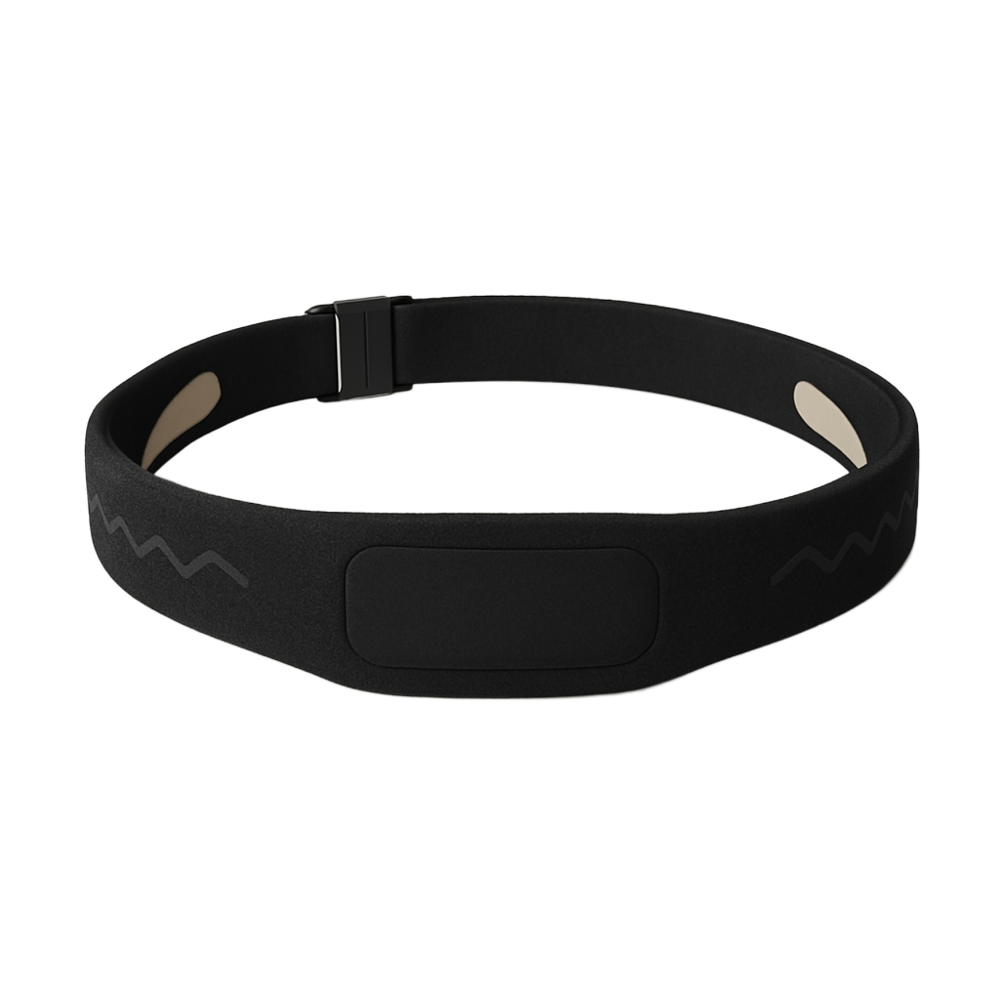
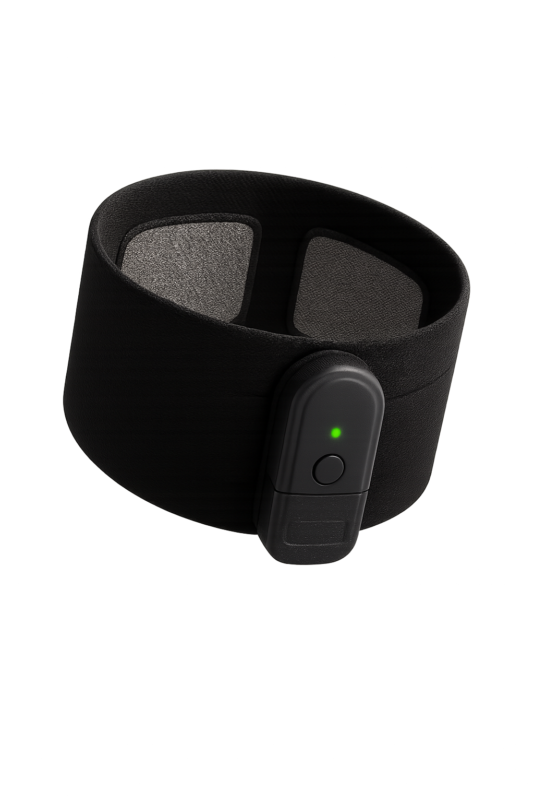
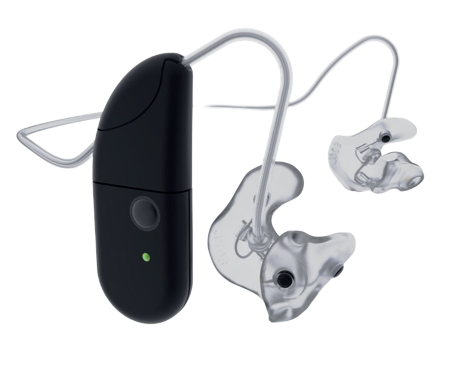
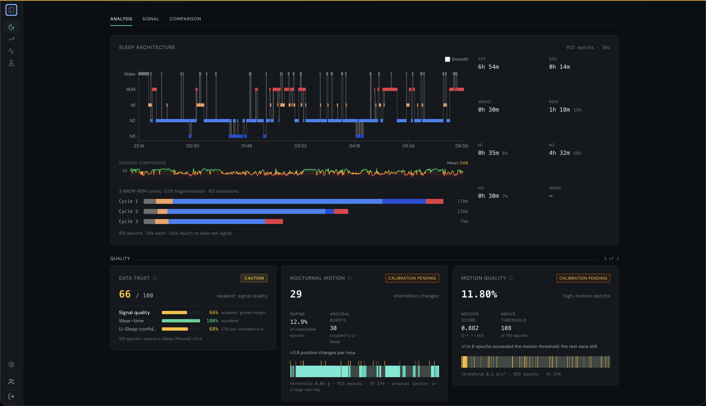

Continuous brain & body measurement for Parkinson's
Objective measurement for Parkinson's — brain and body, day and night.
Movement sensors track the symptom. We add the signals they physically can't reach: clinical-grade EEG, sleep, and 24-hour motor activity, so clinics, therapy developers, and trial sponsors can see the disease between visits.
Everyone depends on the same episodic, clinician-rated exam. Between visits the disease is invisible, and that gap shows up as misdiagnosis, failed trials, and therapies that can't prove they work.
Episodic and subjective
Scored by clinician judgment at visits 3 to 6 months apart. In the PPMI cohort, real-world within-subject reliability of the change score is just ≈0.501 — most of what you measure is noise.
≈0.50
MDS-UPDRS within-subject reliability · PPMI
Wrong at the first visit
At the first untreated visit, clinical accuracy against autopsy is only 26%2, reaching ~85% only after years of follow-up. Slow and uncertain in exactly the window where early treatment matters most.
26%
Diagnostic accuracy · first untreated visit
Hard to prove what works
Recent disease-modifying trials have moved MDS-UPDRS Part III by less than its 3.25-point3 minimal clinically important difference. When the scale can't resolve the effect, you can't tell whether the drug worked.
3.25 pt
MDS-UPDRS III MCID · effects fall short
02The solution
Insai measures it continuously.
Three clinical-grade wearables and one biomarker platform. We capture the brain and body continuously — including sleep, the window movement sensors can't reach.
Day · 24-hour motionNight · overnight EEG
Brain and body, day and night — one continuous record, captured at home.

Nexus Headband

Paragit Sleeve

Cebreo NeuroBuds
Clinical hardware · 3 devices
Whole-body data, day and night.
One continuous record: overnight EEG, 24-hour movement, and daytime cortical signal. All three are in testing at Rigshospitalet across Parkinson's, RBD, and epilepsy; the in-ear NeuroBuds carry the most validation so far.
In testing at RigshospitaletPD · RBD · epilepsy

Insai portal
Analytics · PD models
Signal turned into Parkinson's measures.
Our models turn raw wearable signal into Parkinson's-specific measures. Tremor screening hits AUPR 0.81 across five device classes and ~150 PD subjects, beating the published DREAM benchmark4; severity tracks MDS-UPDRS at ρ 0.80. Sleep staging reaches κ 0.78 against clinical PSG, above the U-Sleep5 baseline, and feeds our fragmentation and architecture markers.
AUPR 0.81 · ρ 0.80Tremor screening & severity vs MDS-UPDRS
Coverage across MDS-UPDRS
Coverage by signal, mapped to MDS-UPDRS items. Validated today runs on our data now; Next is in active development.
TremorWalking and balanceTurning in bedGetting out of chairFreezingEating tasksHobbies / activityHandwritingSpeechSaliva & droolingChewingDressingHygiene
Part III · Motor exam
Clinician-rated · the trial endpoint
4 today·5 nextof 18 items
Rest tremorPostural tremorKinetic tremorConstancy of rest tremorRigidityBody bradykinesiaFinger tappingGaitArising from chairHand movementsPronation-supinationToe tappingLeg agilityFreezing of gaitPostural stabilityPostureSpeechFacial expression
Part IV · Motor complications
Fluctuations & dyskinesia
3 nextof 6 items
Time in OFF stateTime with dyskinesiaFunctional impact of dyskinesiaFunctional impact of fluctuationsComplexity of fluctuationsPainful OFF dystonia
Beyond MDS-UPDRSWe also measure where progression and prodromal PD live: sleep and EEG, on the headband today.
Parkinson's follows a slow decline the system meets late and measures rarely. Our thesis: measure earlier and continuously, and you can bend that curve. Each phase opens a service that targets a specific failure the patient feels.
Pre-symptomatic
10–20 yr before
Lead
RBD home screening
Screening clinics
Prodromal
5–10 yr before
Lead
iRBD enrichment
Pharma sponsors
Diagnosis
Year 0
Lead
Differential dx panel
Movement clinics
Established
Yr 5–10
Lead
Therapy outcomes
Neuromod. therapy
Advanced
Yr 10+
Fast follow
DMT endpoint panel
Pharma sponsors
Untreated declineEarlier & continuous measurementDisability we aim to prevent
Schematic. Parkinson's is now staged across a biological continuum from pre-symptomatic to advanced (Simuni et al., Lancet Neurology 2024)6. Detecting a change in that trajectory depends on more sensitive, continuous measurement than the episodic exam provides (Ribba et al., J Parkinsons Dis 2024)7.
04What we sell
Three offers, three buyers.
The five phases collapse into three offers, one per buyer. Each closes a documented gap.
Neuromodulation therapy companies
Make non-invasive neuromodulation provable.
Continuous motor and sleep response data for non-invasive neuromodulation: T-PEMF, photobiomodulation, TMS, focused ultrasound. Among incisionless interventions, focused-ultrasound subthalamotomy is one of the few validated in a randomized, sham-controlled trial8; continuous wearable evidence gives your medical-affairs team something concrete to show payers and regulators.
Movement-disorder clinics
Continuous monitoring alongside the exam.
Continuous monitoring for research clinics and treatment-optimization centres. The standard exam gives you ≈0.50 change-score reliability1 and ~60% home-diary agreement9; we add validated 24-hour tremor and sleep architecture today, with bradykinesia, ON/OFF and dyskinesia, and RBD screening on the roadmap.
Pharma trial sponsors
Faster trials, sharper endpoints.
Two services for clinical development: home iRBD screening to enrich prodromal cohorts, and multi-modal endpoint panels for disease-modifying trials where the standard scales aren't sensitive enough — the same gap the α-synuclein seed-amplification assay10, its FDA Letter of Support11, and MJFF's WATCH-PD12 are moving to close.
Sources
Evers LJW, et al. Measuring Parkinson's disease over time: the real-world within-subject reliability of the MDS-UPDRS. Mov Disord 2019;34(10):1480–1487.
Adler CH, et al. Low clinical diagnostic accuracy of early vs advanced Parkinson disease: a clinicopathologic study. Neurology 2014;83(5):406–412.
Horváth K, et al. Minimal clinically important difference on the motor examination part of the MDS-UPDRS. Parkinsonism Relat Disord 2015;21(12):1421–1426.
Sieberts SK, et al. Crowdsourcing digital health measures to predict Parkinson's disease severity: the PD Digital Biomarker DREAM Challenge. npj Digit Med 2021;4:53.
Perslev M, et al. U-Sleep: resilient high-frequency sleep staging. npj Digit Med 2021;4:72.
Simuni T, et al. A biological definition of neuronal α-synuclein disease: towards an integrated staging system for research. Lancet Neurol 2024;23(2):178–190.
Ribba B, et al. Modeling of Parkinson's disease progression and implications for detection of disease modification in treatment trials. J Parkinsons Dis 2024;14(6):1225–1235.
Martínez-Fernández R, et al. Randomized trial of focused ultrasound subthalamotomy for Parkinson's disease. N Engl J Med 2020;383(26):2501–2513.
Löhle M, et al. Validation of the PD home diary for assessment of motor fluctuations in advanced Parkinson's disease. npj Parkinsons Dis 2022;8:69.
Siderowf A, et al. Assessment of heterogeneity among PPMI participants using α-synuclein seed amplification: a cross-sectional study. Lancet Neurol 2023;22(5):407–417.
Critical Path Institute / FDA. Letter of Support for the α-synuclein seed amplification assay biomarker; 2024.
Adams JL, et al. Using a smartwatch and smartphone to assess early Parkinson's disease in the WATCH-PD study. npj Parkinsons Dis 2023;9:64.
Our own results — tremor screening AUPR 0.81, severity ρ 0.80, sleep staging κ 0.78 — come from internal validation runs. Full methods and reports live in the Nexus research hub, insai.github.io/biomarker-portal/research.